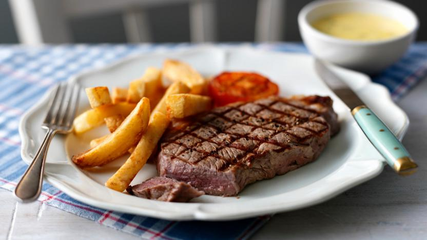

Sandtonresturant was first established in 1994. It is located in the heart of Nairobi town along Taveta Lane. It has a resturant, but it is a hotel, where people can stay in.
Sandton has hotel rooms as well as a bar, and resturant. My favorite place is the resturant itself. Mostly because of the food but I also go there for the music. It has very good music. There are usually to luive singers alternating in the course of the day singing your favoritetunes. You can even make a request if you want to listen to a music you love!
The food at the resturant is amazing. Although the food is cooked on order, the waiting part usually sucks, but its worth the wait. You get fresh food cooked just for you. Plus you will have the music to distract you as you sip a drink or two. One of the best meals I love thee is sirloin steak. It is a mexican recipe and the meat usually turns out amazing. Here is a picture of what I'm talking about:
